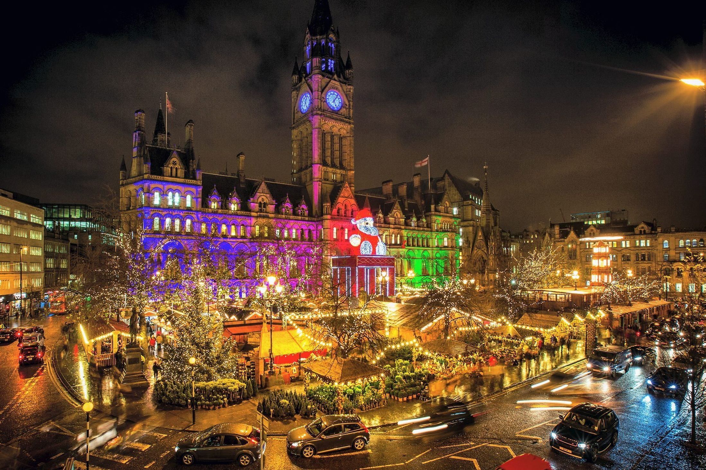

Home National Football Museum Halloween Events Manchester Christmas Market Family Events
Manchester’s award-winning Christmas Markets 2019 returned offering mouth-watering international food, drinks and delicately crafted Yuletide gifts in the heart of this buzzing city. With more than 300 beautifully festooned stalls and chalets spread across the city centre, the Christmas Markets are free and accessible to all.
